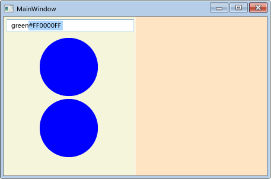
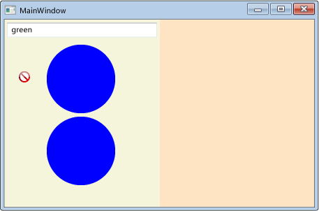
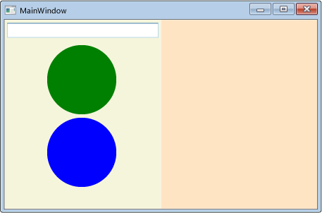
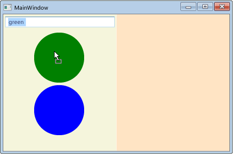
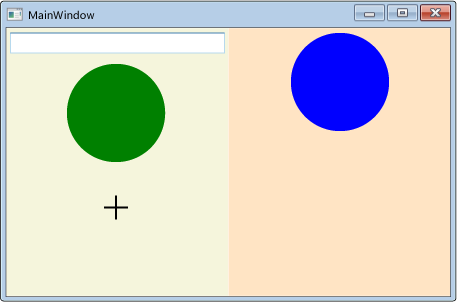

Пошаговое руководство. Включение перетаскивания для пользовательского элемента управления
В этом пошаговом руководстве демонстрируется создание настраиваемого пользовательского элемента управления, который может участвовать в переносе данных путем перетаскивания в Windows Presentation Foundation (WPF).
В этом пошаговом руководстве вы создадите настраиваемый элемент управления WPF UserControl , представляющий круг. Вы реализуете в этом элементе управления функциональность, позволяющую переносить данные посредством перетаскивания. Например, при перетаскивании из одного элемента управления Circle в другой данные цвета заливки копируются из исходного круга в целевой. Если перетащить элемент управления Circle на TextBox, строковое представление цвета заливки копируется в TextBox. Вы также создадите небольшое приложение, которое содержит два элемента управления панели и TextBox для тестирования функциональности перетаскивания и вставки. Вы напишете код, позволяющий панелям обрабатывать перемещенные перетаскиванием данные Circle, в результате чего элементы управления Circle можно будет перемещать или копировать из дочерней коллекции на одной панели в другую.
В данном пошаговом руководстве рассмотрены следующие задачи:
Создание настраиваемого пользовательского элемента управления.
Включение пользовательского элемента управления в качестве источника перетаскивания.
Включение пользовательского элемента управления в качестве целевого объекта перетаскивания.
Включение панели для получения данных, перемещенных перетаскиванием из пользовательского элемента управления.
Предварительные требования
Для выполнения шагов, описанных в этом руководстве, вам понадобится Visual Studio.
Создание проекта приложения
В этом разделе вы создадите инфраструктуру приложения, которая включает главную страницу с двумя панелями и TextBox.
Создайте проект приложения WPF на Visual Basic или Visual C# с именем
DragDropExample. Дополнительные сведения см. в разделе Пошаговое руководство: Создание первого классического приложения WPF.Откройте файл MainWindow.xaml.
Добавьте следующую разметку между открывающим и закрывающим Grid теги.
Эта разметка создает пользовательский интерфейс для тестового приложения.
<Grid.ColumnDefinitions> <ColumnDefinition /> <ColumnDefinition /> </Grid.ColumnDefinitions> <StackPanel Grid.Column="0" Background="Beige"> <TextBox Width="Auto" Margin="2" Text="green"/> </StackPanel> <StackPanel Grid.Column="1" Background="Bisque"> </StackPanel>
Добавьте в проект новый пользовательский элемент управления
В этом разделе вы добавите в проект новый пользовательский элемент управления.
В меню "Проект" выберите пункт Добавить пользовательский элемент управления.
В Добавление нового элемента диалоговом окне измените имя на
Circle.xamlи нажмите кнопку добавить.Circle.xaml и его код программной части добавляются в проект.
Откройте файл Circle.xaml.
Этот файл будет содержать элементы пользовательского интерфейса пользовательского элемента управления.
Добавьте следующую разметку в корневой каталог Grid создать простой пользовательский элемент управления, который представлен синим кругом, пользовательский интерфейс.
<Ellipse x:Name="circleUI" Height="100" Width="100" Fill="Blue" />Откройте файл Circle.xaml.cs или Circle.xaml.vb.
В C# добавьте следующий код после конструктора по умолчанию, чтобы создать конструктор копии. В Visual Basic добавьте следующий код, чтобы создать конструктор по умолчанию и конструктор копии.
Чтобы разрешить копирование пользовательского элемента управления, нужно добавить метод конструктора копии в файле кода программной части. В упрощенном пользовательском элементе управления Circle копируются только свойства Fill и размер пользовательского элемента управления.
public Circle(Circle c) { InitializeComponent(); this.circleUI.Height = c.circleUI.Height; this.circleUI.Width = c.circleUI.Height; this.circleUI.Fill = c.circleUI.Fill; }
Добавление пользовательского элемента управления в главное окно
Откройте файл MainWindow.xaml.
Добавьте следующий XAML в открывающий Window тег, чтобы создать ссылку на пространство имен XML для текущего приложения.
xmlns:local="clr-namespace:DragDropExample"В первом StackPanel, добавьте следующий XAML для создания двух экземпляров пользовательского элемента управления Circle на первой панели.
<local:Circle Margin="2" /> <local:Circle Margin="2" />Полный код XAML для панели выглядит следующим образом.
<StackPanel Grid.Column="0" Background="Beige"> <TextBox Width="Auto" Margin="2" Text="green"/> <local:Circle Margin="2" /> <local:Circle Margin="2" /> </StackPanel> <StackPanel Grid.Column="1" Background="Bisque"> </StackPanel>
Реализация событий источника перетаскивания для пользовательского элемента управления
В этом разделе будут переопределены OnMouseMove метод и инициирует операцию перетаскивания и вставки.
Если перетаскивание начато (нажата кнопка мыши и перемещение мыши), позволяющий преобразовывать данные будут передаваться в DataObject. В данном случае элемент управления Circle упаковывает три элемента данных; строковое представление цвета заливки, двойное представление высоты и копию самого себя.
Запуск операции перетаскивания
Откройте файл Circle.xaml.cs или Circle.xaml.vb.
Добавьте следующий OnMouseMove переопределение, чтобы обеспечить обработку класса для MouseMove событий.
protected override void OnMouseMove(MouseEventArgs e) { base.OnMouseMove(e); if (e.LeftButton == MouseButtonState.Pressed) { // Package the data. DataObject data = new DataObject(); data.SetData(DataFormats.StringFormat, circleUI.Fill.ToString()); data.SetData("Double", circleUI.Height); data.SetData("Object", this); // Inititate the drag-and-drop operation. DragDrop.DoDragDrop(this, data, DragDropEffects.Copy | DragDropEffects.Move); } }Это OnMouseMove переопределение выполняет следующие задачи:
Проверяет, нажата ли левая кнопка мыши при перемещении мыши.
Упаковывает данные Circle в DataObject. В данном случае элемент управления Circle упакует три элемента данных; строковое представление цвета заливки, двойное представление высоты и копию самого себя.
Вызывает статический DragDrop.DoDragDrop метода для инициации операции перетаскивания и вставки. Передайте следующие три параметра для DoDragDrop метод:
dragSource— Ссылка на этот элемент управления.data— DataObject Созданный в предыдущем коде.allowedEffectsРазрешенные операции перетаскивания и вставки, которые являются Copy или Move.
Нажмите клавишу F5, чтобы выполнить сборку приложения и запустить его.
Выберите один из элементов управления Circle и перетащите его над панелями, другим элементом Circle и TextBox. При перетаскивании над TextBox, курсор изменяется, обозначая перемещение.
При перетаскивании элемента управления Circle над TextBox, нажмите клавишу Ctrl ключ. Обратите внимание на то, как изменится курсор, обозначая копирование.
Перетащите элемент управления Circle на TextBox. Строковое представление цвета заливки элемента управления Circle добавляется к TextBox.

По умолчанию курсор изменяется во время операции перетаскивания, чтобы указать, какой результат даст перетаскивание данных в ту или иную точку. Можно настроить получаемую пользователем путем обработки GiveFeedback событий и настройки другого курсора.
Отправить отзыв для пользователя
Откройте файл Circle.xaml.cs или Circle.xaml.vb.
Добавьте следующий OnGiveFeedback переопределение, чтобы обеспечить обработку класса для GiveFeedback событий.
protected override void OnGiveFeedback(GiveFeedbackEventArgs e) { base.OnGiveFeedback(e); // These Effects values are set in the drop target's // DragOver event handler. if (e.Effects.HasFlag(DragDropEffects.Copy)) { Mouse.SetCursor(Cursors.Cross); } else if (e.Effects.HasFlag(DragDropEffects.Move)) { Mouse.SetCursor(Cursors.Pen); } else { Mouse.SetCursor(Cursors.No); } e.Handled = true; }Это OnGiveFeedback переопределение выполняет следующие задачи:
Нажмите клавишу F5, чтобы выполнить сборку приложения и запустить его.
Перетащите один из круга управляет над панелями, другим элементом Circle, и TextBox. Обратите внимание, что курсоры созданы пользовательские курсоры, которые указаны в OnGiveFeedback переопределить.

Выделите текст
greenиз TextBox.Перетащите текст
greenв элемент управления Circle. Обратите внимание, что отображаются курсоры по умолчанию: они указывают на результаты операции перетаскивания. Курсор обратной связи всегда задается источником перетаскивания.
Реализация событий целевого объекта перетаскивания для пользовательского элемента управления
Изучая этот раздел, вы укажете, что пользовательский элемент управления является целевым объектом перетаскивания, переопределите методы, позволяющие пользовательскому элементу управления функционировать в качестве целевого объекта перетаскивания, и обработаете перемещенные в него данные.
Чтобы включить пользовательский элемент управления в качестве целевого объекта перетаскивания, выполните следующие действия.
Откройте файл Circle.xaml.
В открывающем UserControl , добавьте AllowDrop свойство и присвойте ему значение
true.<UserControl x:Class="DragDropWalkthrough.Circle" xmlns="http://schemas.microsoft.com/winfx/2006/xaml/presentation" xmlns:x="http://schemas.microsoft.com/winfx/2006/xaml" xmlns:mc="http://schemas.openxmlformats.org/markup-compatibility/2006" xmlns:d="http://schemas.microsoft.com/expression/blend/2008" mc:Ignorable="d" d:DesignHeight="300" d:DesignWidth="300" AllowDrop="True">
OnDrop Метод вызывается, когда AllowDrop свойству true и удалении данных из источника перетаскивания в пользовательский элемент управления Circle. В этом методе вы обработаете перемещенные данные и примените их к элементу управления Circle.
Обработка вставляемых данных
Откройте файл Circle.xaml.cs или Circle.xaml.vb.
Добавьте следующий OnDrop переопределение, чтобы обеспечить обработку класса для Drop событий.
protected override void OnDrop(DragEventArgs e) { base.OnDrop(e); // If the DataObject contains string data, extract it. if (e.Data.GetDataPresent(DataFormats.StringFormat)) { string dataString = (string)e.Data.GetData(DataFormats.StringFormat); // If the string can be converted into a Brush, // convert it and apply it to the ellipse. BrushConverter converter = new BrushConverter(); if (converter.IsValid(dataString)) { Brush newFill = (Brush)converter.ConvertFromString(dataString); circleUI.Fill = newFill; // Set Effects to notify the drag source what effect // the drag-and-drop operation had. // (Copy if CTRL is pressed; otherwise, move.) if (e.KeyStates.HasFlag(DragDropKeyStates.ControlKey)) { e.Effects = DragDropEffects.Copy; } else { e.Effects = DragDropEffects.Move; } } } e.Handled = true; }Это OnDrop переопределение выполняет следующие задачи:
Использует GetDataPresent метод, чтобы проверить наличие перемещенные данные строковый объект.
Использует GetData метод для извлечения строковых данных в том случае, если он имеется.
Использует BrushConverter для строки, преобразованные в Brush.
Если преобразование прошло успешно, применяет кисть к Fill из Ellipse , предоставляет пользовательский Интерфейс элемента управления Circle.
Метки Drop событие как обработанное. Событие сброса необходимо пометить как обработанное, чтобы другие элементы, которые получают это событие, знали, что событие было обработано пользовательским элементом управления Circle.
Нажмите клавишу F5, чтобы выполнить сборку приложения и запустить его.
Выделите текст
greenв TextBox.Перетащите текст в элемент управления Circle. Элемент управления Circle поменяет цвет с синего на зеленый.

Введите текст
greenв TextBox.Выделите текст
greв TextBox.Перетащите его в элемент управления Circle. Обратите внимание, что курсор изменяется, чтобы указать, что перенос разрешен, но цвет элемента управления Circle не меняется, потому что
gre— недопустимый цвет.Выполните перетаскивание с зеленого элемента управления Circle на синий. Элемент управления Circle поменяет цвет с синего на зеленый. Обратите внимание, что отображается курсор, который зависит от того TextBox или элемент управления Circle является источником перетаскивания.
Установка AllowDrop свойства true и обработка перенесенных данных — все, что требуется для включения элемента в качестве целевого объекта перетаскивания. Тем не менее, для повышения удобства работы пользователя, необходимо также обрабатывать DragEnter, DragLeave, и DragOver события. В этих событиях можно выполнять проверки и предоставлять дополнительную обратную связь пользователю до сброса данных.
При перетаскивании данных над пользовательским элементом управления Circle элемент управления должен уведомить источник перетаскивания, может ли он обработать переносимые данные. Если элемент управления не знает, как обрабатывать данные, он должен отклонить перетаскивание. Чтобы сделать это, будет обрабатывать DragOver событий и набор Effects свойство.
Проверка допустимости сброса данных
Откройте файл Circle.xaml.cs или Circle.xaml.vb.
Добавьте следующий OnDragOver переопределение, чтобы обеспечить обработку класса для DragOver событий.
protected override void OnDragOver(DragEventArgs e) { base.OnDragOver(e); e.Effects = DragDropEffects.None; // If the DataObject contains string data, extract it. if (e.Data.GetDataPresent(DataFormats.StringFormat)) { string dataString = (string)e.Data.GetData(DataFormats.StringFormat); // If the string can be converted into a Brush, allow copying or moving. BrushConverter converter = new BrushConverter(); if (converter.IsValid(dataString)) { // Set Effects to notify the drag source what effect // the drag-and-drop operation will have. These values are // used by the drag source's GiveFeedback event handler. // (Copy if CTRL is pressed; otherwise, move.) if (e.KeyStates.HasFlag(DragDropKeyStates.ControlKey)) { e.Effects = DragDropEffects.Copy; } else { e.Effects = DragDropEffects.Move; } } } e.Handled = true; }Это OnDragOver переопределение выполняет следующие задачи:
Нажмите клавишу F5, чтобы выполнить сборку приложения и запустить его.
Выделите текст
greв TextBox.Перетащите текст в элемент управления Circle. Обратите внимание, что курсор изменяется, чтобы указать, что перетаскивание не разрешено, потому что
greне является допустимым цветом.
Использование предварительного просмотра при перетаскивании повышает удобство работы пользователей. Для пользовательского элемента управления Circle переопределяются OnDragEnter и OnDragLeave методы. Когда данные перетаскиваются над элементом управления, текущий фон Fill сохраняется в переменной-заполнителе. Затем строка преобразуется в кисть и применяется к Ellipse , предоставляющий окружности пользовательского интерфейса. Если данные перетаскиваются за элемент управления Circle без сброса, исходное Fill значение повторно применить к элементу управления Circle.
Предварительный просмотр результатов операции перетаскивания
Откройте файл Circle.xaml.cs или Circle.xaml.vb.
В классе Circle объявите закрытую Brush переменную с именем
_previousFillи инициализируйте его, чтобыnull.public partial class Circle : UserControl { private Brush _previousFill = null;Добавьте следующий OnDragEnter переопределение, чтобы обеспечить обработку класса для DragEnter событий.
protected override void OnDragEnter(DragEventArgs e) { base.OnDragEnter(e); // Save the current Fill brush so that you can revert back to this value in DragLeave. _previousFill = circleUI.Fill; // If the DataObject contains string data, extract it. if (e.Data.GetDataPresent(DataFormats.StringFormat)) { string dataString = (string)e.Data.GetData(DataFormats.StringFormat); // If the string can be converted into a Brush, convert it. BrushConverter converter = new BrushConverter(); if (converter.IsValid(dataString)) { Brush newFill = (Brush)converter.ConvertFromString(dataString.ToString()); circleUI.Fill = newFill; } } }Это OnDragEnter переопределение выполняет следующие задачи:
Добавьте следующий OnDragLeave переопределение, чтобы обеспечить обработку класса для DragLeave событий.
protected override void OnDragLeave(DragEventArgs e) { base.OnDragLeave(e); // Undo the preview that was applied in OnDragEnter. circleUI.Fill = _previousFill; }Это OnDragLeave переопределение выполняет следующие задачи:
Нажмите клавишу F5, чтобы выполнить сборку приложения и запустить его.
Выделите текст
greenв TextBox.Перетащите текст над элементом управления Circle, не сбрасывая его. Элемент управления Circle поменяет цвет с синего на зеленый.

Перетащите текст от элемента управления Circle. Элемент управления Circle изменится с зеленого на синий.
Включение панели для получения перетаскиваемых данных
В этом разделе описано как разрешить панелей, на которых размещены пользовательские элементы управления Circle в качестве целевых объектов перетаскивания для перемещенных данных Circle. Вы реализуете код, который позволяет переместить элемент Circle с одной панели в другую или скопировать элемент управления Circle, удерживая нажатой Ctrl ключа во время перетаскивания круг.
Откройте файл MainWindow.xaml.
Как показано в следующем XAML, в каждом из StackPanel элементы управления, добавьте обработчики для DragOver и Drop события. Имя DragOver обработчик событий
panel_DragOverи назовите Drop обработчик событийpanel_Drop.<StackPanel Grid.Column="0" Background="Beige" AllowDrop="True" DragOver="panel_DragOver" Drop="panel_Drop"> <TextBox Width="Auto" Margin="2" Text="green"/> <local:Circle Margin="2" /> <local:Circle Margin="2" /> </StackPanel> <StackPanel Grid.Column="1" Background="Bisque" AllowDrop="True" DragOver="panel_DragOver" Drop="panel_Drop"> </StackPanel>Откройте файл MainWindows.xaml.cs или MainWindow.xaml.vb.
Добавьте следующий код для DragOver обработчик событий.
private void panel_DragOver(object sender, DragEventArgs e) { if (e.Data.GetDataPresent("Object")) { // These Effects values are used in the drag source's // GiveFeedback event handler to determine which cursor to display. if (e.KeyStates == DragDropKeyStates.ControlKey) { e.Effects = DragDropEffects.Copy; } else { e.Effects = DragDropEffects.Move; } } }Это DragOver обработчик событий выполняет следующие задачи:
Проверяет, что перетаскиваемые данные с данными «Объект», было упаковано в DataObject с пользовательским элементом управления Circle и переданы в вызове DoDragDrop.
Если данные «Объект» отсутствует, проверяет ли Ctrl клавиши.
Если Ctrl клавиша нажата, задает Effects свойства Copy. В противном случае значение Effects свойства Move.
Добавьте следующий код для Drop обработчик событий.
private void panel_Drop(object sender, DragEventArgs e) { // If an element in the panel has already handled the drop, // the panel should not also handle it. if (e.Handled == false) { Panel _panel = (Panel)sender; UIElement _element = (UIElement)e.Data.GetData("Object"); if (_panel != null && _element != null) { // Get the panel that the element currently belongs to, // then remove it from that panel and add it the Children of // the panel that its been dropped on. Panel _parent = (Panel)VisualTreeHelper.GetParent(_element); if (_parent != null) { if (e.KeyStates == DragDropKeyStates.ControlKey && e.AllowedEffects.HasFlag(DragDropEffects.Copy)) { Circle _circle = new Circle((Circle)_element); _panel.Children.Add(_circle); // set the value to return to the DoDragDrop call e.Effects = DragDropEffects.Copy; } else if (e.AllowedEffects.HasFlag(DragDropEffects.Move)) { _parent.Children.Remove(_element); _panel.Children.Add(_element); // set the value to return to the DoDragDrop call e.Effects = DragDropEffects.Move; } } } } }Это Drop обработчик событий выполняет следующие задачи:
Проверяет ли Drop уже было обработано событие. Например, если элемент управления Circle перетаскивается на другом круг которого дескрипторы Drop событий, требуется панель, содержащую круг его.
Если Drop событие не обработано, проверяет ли Ctrl клавиши.
Если Ctrl при нажатии клавиши Drop происходит, создает копию круга управления и добавьте его в Children коллекцию StackPanel.
Если Ctrl клавиша не нажата, перемещает элемент управления Circle из Children коллекцию его родительской панели Children коллекцию на панели, который был сброшен.
Наборы Effects свойства для уведомления DoDragDrop метод ли была выполнена операция перемещения или копирования.
Нажмите клавишу F5, чтобы выполнить сборку приложения и запустить его.
Выделите текст
greenиз TextBox.Перетащите текст над элементом управления Circle и опустите его на элемент.
Перетащите элемент управления Circle из левой панели в правую панель и опустите его. Элемент управления Circle удаляется из Children коллекции левой панели и добавляется в коллекцию дочерних элементов на правой панели.
Перетащите элемент управления Circle из панели, он находится в на другую панель и опустите его удерживая нажатой клавишу Ctrl ключ. Элемент управления Circle копируется, и копия добавляется Children коллекцию принимающей панели.
